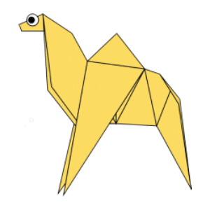
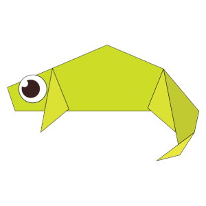
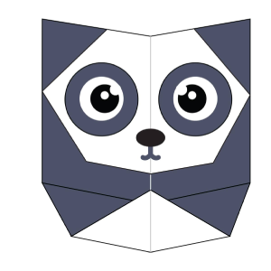
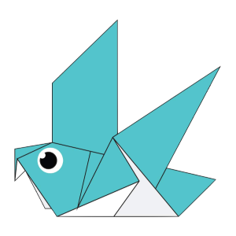

1) Origami Camel

How to make Origami Camel
i) Fold the paper in half.
ii) Fold the paper in half again.
iii) Open the top flap of paper over to the right.
iv) Squash Fold this flap down.
v) Turn the paper over.
vi) Open the top flap of paper over to the left and Squash Fold it down.
vii) Fold and Unfold the sides and the top along the dotted lines. You’ll use these creases in the next step.
viii) Open up the top layer of paper and fold it up using the crease from the previous step.
ix) Fold in both sides along the existing creases making a Petal Fold.
x) Turn the paper over.
xi) Repeat steps 7-9 on this side.
xii) Fold both sides to the centre along the dotted lines. Then repeat on the other side.
xii) Inside Reverse Fold up both sides of the paper just like in a paper crane.
xiii) Inside Reverse Fold up both sides of the paper just like in a paper crane.
xiv) Reverse Fold the back part down to make the back legs.
xv) Fold the top flap of paper down and repeat on the other side to make the front legs.
xvi) Reverse Fold the tip down to make the head.
xvii) Inside Reverse Fold the tip of the head.
xviii) Fold the back of the leg inside the model along the dotted line. Repeat on the other side.
The camel is completed
Origami Chameleon

How to make Origami Chameleon
i) Fold and unfold the paper in half both ways. Then fold the top and bottom to the centre.
ii) Fold and unfold both sides to the centre.
iii) Fold all the corners down along the diagonal dotted lines.
iv) Open up each corner and Squash Fold them flat. See the next step to see how each corner looks after the Squash Fold.
v) Turn the paper over.
vi) Fold the edges of the paper down along the dotted lines.
vii) Turn the paper over.
viii) Fold the 4 flaps of paper out along the dotted lines.
ix) Fold the paper in half over to the back.
x) Inside Reverse Fold the paper up along the dotted line.
xi) Outside Reverse Fold the other side of the model down along the dotted line to form the tail.
xii) Make another Outside Reverse Fold on the end of the tail.
Your chameleon is ready.
Origami Panda

How to make Origami Panda
i) Fold and unfold the paper in half both ways.
ii) Fold both sides in along the dotted lines.
iii) Fold and unfold the bottom and top along the dotted lines.
iv) Fold the paper behind along the dotted line.
v) Turn the paper over.
vi) Fold the top of the paper down along the dotted line.
vii) Fold the paper up along the dotted line.
viii) Fold and unfold the paper in half and leave slightly folded to give a 3D look.
Your Panda is Ready
Origami Pigeon

How to make Origami Pigeon
i) Fold the paper in half and then unfold it.
ii) Fold the paper in half the other way.
iii) Fold both layers of paper to the right along the dotted line.
iv) Fold the top layer of paper to the left along the dotted line.
v) Fold the model in half down along the dotted line.
vi) Fold the top flap of paper up along the dotted line and then repeat on the other side.
vii) Fold the paper along the dotted line and then unfold it.
viii) Make an Inside Reverse Fold using the crease from the previous step.
Your Pigeon is ready.